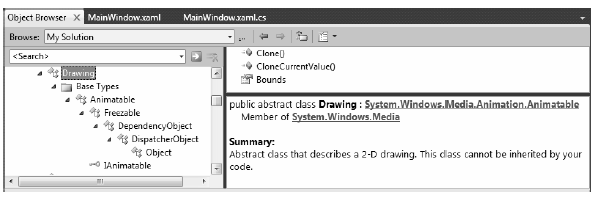

While the Shape types allow you to generate any sort of interactive two-dimensional surface, they entail quite a bit of memory overhead due to their rich inheritance chain. And though the Path class can help remove some of this overhead using contained geometries (rather than a large collection of other shapes), WPF provides a sophisticated drawing and geometry programming interface that renders even more lightweight 2D vector images.
The entry point into this API is the abstract System.Windows.Media.Drawing class (in PresentationCore.dll), which on its own does little more than define a bounding rectangle to hold the rendering. Notice in Figure 29-19, the inheritance chain of the Drawing class is significantly more lightweight than Shape, given that neither UIElement nor FrameworkElement is in the inheritance chain.
Figure 29-19 The Drawing class is more lightwight than Shape
WPF provides various classes that extend Drawing, each of which represents a particular way of drawing the content, as described in Table 29-5.
Table 29-5. WPF Drawing Derived Types
| Type | Meaning in Life |
|---|---|
| DrawingGroup | Used to combine a collection of separate Drawing derived objects into a single composite rendering. |
| GeometryDrawing | Used to render 2D shapes in a very lightweight manner. |
| GlyphRunDrawing | Used to render textual data using WPF graphical rendering services. |
| ImageDrawing | Used to render an image file, or geometry set, into a bounding rectangle. |
| VideoDrawing | Used to play an audio file or video file. This type can only be fully exploited using procedural code. If you wish to play videos via XAML, the MediaPlayer type is a better choice. |
Because they are more lightweight, Drawing derived types do not have intrinsic support for handling input events as they are not UIElements or FrameworkElements (although it is possible to programmatically perform hit-testing logic); however, they can be animated due to the fact that they extend Animatable (Chapter 30 will examine the animation features of WPF).
Another key difference between Drawing derived types and Shape derived types is that Drawing derived types have no ability to render themselves, as they do not derive from UIElement! Rather, derived types must be placed within a hosting object (specifically, DrawingImage, DrawingBrush, or DrawingVisual) to display their content.
DrawingImage allows you to place drawing and geometries inside of a WPF Image control, which typically is used to display data from an external file. DrawingBrush allows you to build a brush based on a drawing and its geometries, in order to set a property that requires a brush. Finally, DrawingVisual is used only in the “visual“ layer of graphical rendering, which is driven completely via C# code.
Although using drawings is a bit more complex than using simple shapes, this decoupling of graphical composition from graphical rendering makes the Drawing derived types much more lightweight than the Shape derived types, while still retaining key services.
Earlier in this chapter, we filled a Path with a group of geometries like so:
<Path Fill = "Orange" Stroke = "Blue" StrokeThickness = "3"> <Path.Data> <GeometryGroup> <EllipseGeometry Center = "75,70" RadiusX = "30" RadiusY = "30" /> <RectangleGeometry Rect = "25,55 100 30" /> <LineGeometry StartPoint="0,0" EndPoint="70,30" /> <LineGeometry StartPoint="70,30" EndPoint="0,30" /> </GeometryGroup> </Path.Data> </Path>
By doing this, we gain interactivity from Path but are still fairly lightweight given our geometries. However, if you want to render the same output and have no need for any (out-of-the-box) interactivity, you can place the same <GeometryGroup> inside a DrawingBrush, like this:
<DrawingBrush> <DrawingBrush.Drawing> <GeometryDrawing> <GeometryDrawing.Geometry> <GeometryGroup> <EllipseGeometry Center = "75,70" RadiusX = "30" RadiusY = "30" /> <RectangleGeometry Rect = "25,55 100 30" /> <LineGeometry StartPoint="0,0" EndPoint="70,30" /> <LineGeometry StartPoint="70,30" EndPoint="0,30" /> </GeometryGroup> </GeometryDrawing.Geometry> <!-- A custom pen to draw the borders --> <GeometryDrawing.Pen> <Pen Brush="Blue" Thickness="3"/> </GeometryDrawing.Pen> <!-- A custom brush to fill the interior --> <GeometryDrawing.Brush> <SolidColorBrush Color="Orange"/> </GeometryDrawing.Brush> </GeometryDrawing> </DrawingBrush.Drawing> </DrawingBrush>
When you place a group of geometries into a DrawingBrush, you also need to establish the Pen object used to draw the boundaries, as we no longer inherit a Stroke property from the Shape base class. Here, I created a <Pen> with the same settings used in the Stroke and StrokeThickness values of the previous Path example.
Furthermore, since we no longer inherit a Fill property from Shape, we also need to use property element syntax to define a brush object to use for the <DrawingGeometry>, which here is a solid colored orange brush, just like the previous Path settings.
Now that you have a DrawingBrush, you can use it to set the value of any property requiring a brush object. For example, if you are authoring this markup in kaxaml, you could use property-element syntax to paint your drawing over the entire surface of a Page
<Page xmlns="http://schemas.microsoft.com/winfx/2006/xaml/presentation" xmlns:x="http://schemas.microsoft.com/winfx/2006/xaml"> <Page.Background> <!-- Same DrawingBrush as seen above --> <DrawingBrush> ... </DrawingBrush> </Page.Background> </Page>
Or, you can use this <DrawingBrush> to set a different brush-compatible property, such as the Background property of a Button:
<Page xmlns="http://schemas.microsoft.com/winfx/2006/xaml/presentation" xmlns:x="http://schemas.microsoft.com/winfx/2006/xaml"> <Button Height="100" Width="100"> <Button.Background> <!-- Same DrawingBrush as seen above --> <DrawingBrush> ... </DrawingBrush> </Button.Background> </Button> </Page>
No matter which brush-compatible property you set with your custom <DrawingBrush>, the bottom line is you are rendering a 2D vector image with much less overhead than the same 2D image rendered with shapes.
The DrawingImage type allows you to plug your drawing geometry into a WPF <Image> control. Consider the following:
<Page xmlns="http://schemas.microsoft.com/winfx/2006/xaml/presentation" xmlns:x="http://schemas.microsoft.com/winfx/2006/xaml"> <Image Height="100" Width="100"> <Image.Source> <DrawingImage> <DrawingImage.Drawing> <GeometryDrawing> <GeometryDrawing.Geometry> <GeometryGroup> <EllipseGeometry Center = "75,70" RadiusX = "30" RadiusY = "30" /> <RectangleGeometry Rect = "25,55 100 30" /> <LineGeometry StartPoint="0,0" EndPoint="70,30" /> <LineGeometry StartPoint="70,30" EndPoint="0,30" /> </GeometryGroup> </GeometryDrawing.Geometry> <!-- A custom pen to draw the borders --> <GeometryDrawing.Pen> <Pen Brush="Blue" Thickness="3"/> </GeometryDrawing.Pen> <!-- A custom brush to fill the interior --> <GeometryDrawing.Brush> <SolidColorBrush Color="Orange"/> </GeometryDrawing.Brush> </GeometryDrawing> </DrawingImage.Drawing> </DrawingImage> </Image.Source> </Image> </Page>
In this case, our <GeometryDrawing> has been placed into a <DrawingImage>, rather than a <DrawingBrush>. Using this <DrawingImage>, we can set the Source property of the Image control.